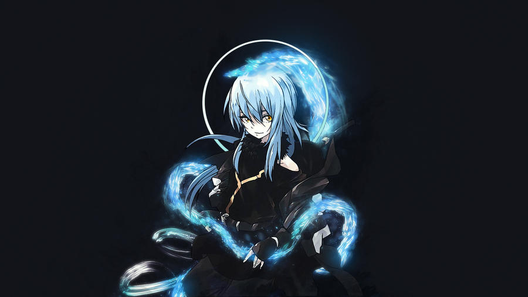

|  | BIOGRAFIA |
|---|---|
|
Rimuru era um homem comum que morreu e reencarnou em outro mundo como um slime, a forma mais fraca possível.
Porém, graças a habilidades únicas concedidas durante sua reencarnação,
ele rapidamente se tornou uma criatura extremamente poderosa. À medida que encontra aliados e constrói a
nação de Tempest, Rimuru cresce como líder, buscando criar um lugar onde todas as raças possam viver em paz.
Apesar da forma inocente e simpática, ele possui um poder enorme e uma determinação firme quando se
trata de proteger seus amigos. | |
| ARMAS | |
|
Corpo Maleável: Seu próprio corpo serve como arma, escudo e ferramenta, podendo se moldar a qualquer combate. Predador: Rimuru pode consumir inimigos, objetos e magias, copiando suas habilidades e ganhando novas formas e poderes. | |
| Habilidades | |
|
Grande Sábio: Uma inteligência suprema que analisa situações e aprimora habilidades instantaneamente. Regeneração e Resistência Extremas: Cura danos rapidamente e resiste à maior parte de ataques físicos ou mágicos. Transformação e Habilidades Absorvidas: Pode transformar seu corpo e usar técnicas que aprendeu ao absorver outros seres. |